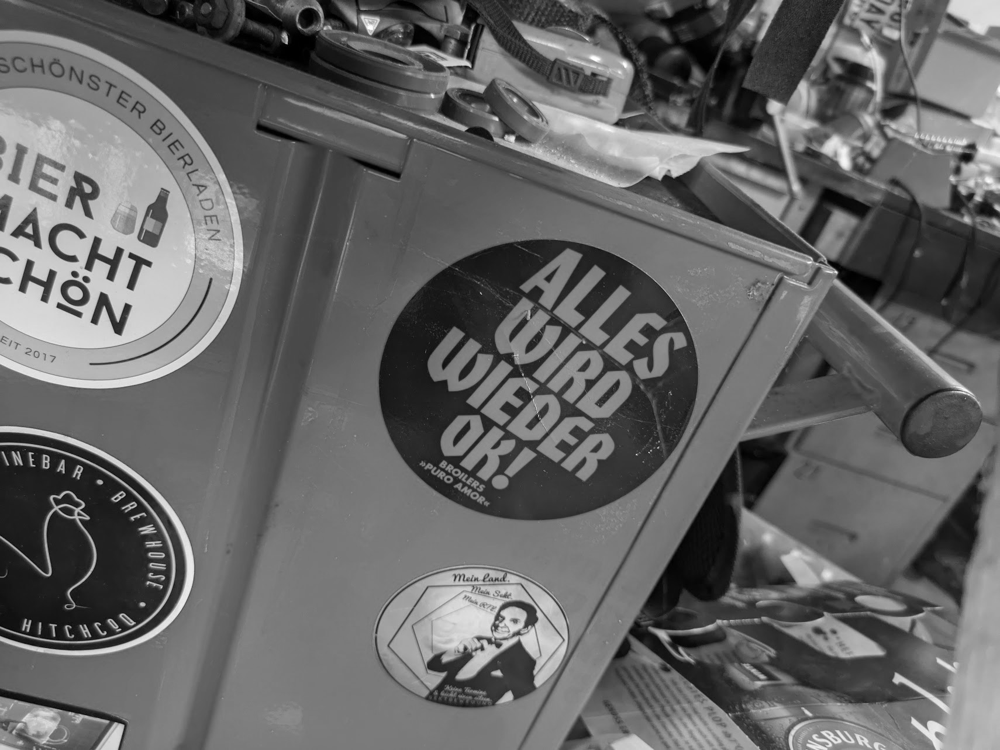

Depression
Triggerwarnung: Dieser Text handelt von Depression und Panikattacken.

Ich bin in eine Depression gerutscht.
Ich habe lange überlegt, ob ich das schreiben soll. Zum einen bin ich sowieso nicht mehr wahnsinnig in Social Media aktiv. Zum anderen fühlt es sich bei aller eigenen Akzeptanz, dass ich diese Krankheit habe und es eine ist, an, als würde ich eine Schwäche preisgeben. Was natürlich Blödsinn ist. Denn eine Depression sucht sich niemand aus. Und ich bin in guten Momenten stolz auf mich, das schon erkannt zu haben und aktiv dagegen anzugehen. Und vielleicht hilft es jemandem, der noch nicht weiß, warum er sich mies fühlt.
Der Hintergrund
Vor zwei Jahren ist unser Leben als Familie ziemlich durchgeschüttelt worden. In Folge einer Tumorbehandlung am Rücken war meine Frau und Mutter unseres damals gerade einjährigen Sohnes teilquerschnittsgelähmt und musste sich zurück ins Leben kämpfen. Während ich vier Monate lang alleinsorgend war.
Seitdem ist viel passiert. Das akute Gefühl direkt nach dem Schicksalsschlag, dass alles immer kurz davor ist, gegen die Wand zu fahren, und ich mehr Verantwortung für uns alle trage, um durch die weitere Zeit zu kommen, konnte ich bei allen Fortschritten meiner Frau offenbar nie ganz ablegen. Vermutlich fing da schon die Depression an, an meinen Kräften zu nagen.
Die Energiebilanz bei Null
Denn egal was wir gemeinsam Schönes unternahmen — es war immer eine riesige Anstrengung für mich. Die Energiebilanz aus Einsatz und Ertrag war für mich meist bei maximal 0. Ich hatte durchgehend eine Grundanspannung in mir, die mir teilweise bis zur Gurgel hochging, auch wenn ich einfach nur nach der Arbeit auf dem Spieleteppich mit meinem Sohn und seinen Autos spielte.
Ich dachte, naja, okay, so ist das halt mit Kind mit der durchgehenden Anspannung, stell dich nicht an, bist du halt schwach, dass das so anstrengend ist, aber das ist für alle so. Musst du eben aushalten, andere schaffen das ja auch.
Ich weiß mittlerweile, dass das Quatsch ist.
Der Abstieg
Ich habe Ende August an einem Mittwochmorgen gemerkt, das ich so antriebslos und unkonzentriert bin, dass ich nicht arbeiten kann — und bin zum Hausarzt gegangen. Ach, reicht, wenn sie mich erstmal diese Woche krank schreiben. Nächste Woche geht es sicher wieder. Ging's nicht. Und es wurde schlechter.
Ich verstehe, wieso man davon spricht, dass man in eine Depression "rutscht". Obwohl ich durch zwei Jahre Gesprächstherapie wusste, dass es gerade in die falsche Richtung läuft — einmal losgeruscht, war es schwer sie aufzuhalten.
Ich bekam täglich Panikattacken. Ich konnte keine strukturierten, lösungsorientierten Gedanken mehr fassen. In meinem Kopf waren nur Probleme, es war laut, unorganisiert und schnell. Wie ein Feuerwerk, bei dem jeder grell leuchtende Funke ein Gedanke ist. Kurz da, peng, weg. Tausende gleichzeitig. Und dann direkt die nächste Rakete.
Ich war bei der kleinsten Anforderung an mich komplett überfordert. "Kannst du gleich noch die Spülmaschine ausräumen?" — zack, gelähmt. Ich konnte nicht. Als hätte ich eine Bleiweste an, die mich daran hindert aufzustehen.
Ich konnte abends nicht vor 2 Uhr einschlafen, war früh wach, war wahnsinnig platt und erschöpft, aber der Kopf war so laut und ich so unter Spannung, dass ein Mittagsschlaf nahezu ein Ding der Unmöglichkeit war. Ich kam nicht zur Ruhe. Und wenn ich doch kurz eingenickt war, war ich danach niedergeschlagener als vorher. Diese körperliche Anspannung sorgte zudem für ein andauerndes Körpergefühl wie bei einem heftigen Kater nach durchzechter Nacht.
Versuche, dagegen anzukämpfen
Ich konnte nicht mehr aufs Smartphone schauen, alles überforderte mich. Ich fing an mit Yoga, spazierte stundenlang durch die Felder, versuchte es mit Meditation, Achtsamkeitsübungen, progressiver Muskelentspannung. Ich fuhr Rad. Das powert aus, dachte ich mir, da bist du danach so richtig positiv platt. Denkste. Zehn Minuten nach der Radtour ging's mit gleichlautem Alarm im Oberstübchen wieder weiter. Trotzdem: Beschäftigt bleiben, damit ich kurz die Gedanken zur Ruhe bringen kann — wie fürchterlich anstrengend.
Ich konnte in den depressivsten Wochen auch nicht mehr meine Lieblingsmusik hören. Punk und Ska haben mich überreizt. Ich fing dann wieder langsam an, bewusst Low Fi oder Klassik zu hören.
Medikamente und das Schuldgefühl
Mir war klar: Ich brauche auch medikamentöse Unterstützung, um da rauszukommen, weil die vielen Werkzeuge, die ich kannte, um meine Tage trotzdem aktiv zu gestalten, nicht ausreichten. Und dann machte mir aber die Unbekannte "Antidepressivum" Tage vor der ersten Einnahme noch zusätzlich Bauchschmerzen. Unnötig, weiß ich jetzt.
Ich konnte den meisten Aufgaben im Haushalt und mit Kind nicht mehr nachkommen und meine Frau musste mich hier extrem entlasten. Und dann sagt dir die Depression: Fühl dich doch jetzt mal schuldig dafür, dass du deine Familie gerade im Stich lässt! Was ein Kokolores, weiß ich selbst. Wusste ich im Zweifel auch zwei Stunden vorher und am nächsten Morgen, aber dann sitzt man da abends heulend auf der Couch.
Unterstützung
Ich bin so dankbar für mein privates Umfeld, in dem ich immer offen über meine Gefühle sprechen kann. Ich habe einen empathischen Hausarzt, eine kompetente Psychiaterin und eine Psychotherapeutin, die seit zwei Jahren meine Umstände und die Themen kennt. Ich fühle mich gut unterstützt.
Es wird besser
Das Antidepressivum beginnt zu wirken. Es ist eben keine Schmerztablette, sondern dauert ein paar Wochen. Faszinierend, dass ich schon innere Ruhe, die ich wirklich gar nicht mehr kannte, in einzelnen Momenten spüre — auch wenn mein Sohn mal zetert, dann bin ich vielleicht genervt, aber mir hängt die Spannung nicht mehr bis zum Hals. Ein krasses Gefühl.
Wenn meine Frau eine Idee für einen Ausflug hat, ist in guten Momenten nicht mehr spontan der verkrampfte Gedanke an die damit verbundene Anstrengung da, sondern: Ja, können wir machen. Plötzlich ist vorstellbar, dass einem schöne Erlebnisse mehr Energie geben als sie kosten, geil. Dafür lohnt es sich doch, sich da weiter rauszuwühlen.
Aus drei Tage mal krank geschrieben sind mittlerweile sieben Wochen geworden. Und ein paar kommen sicher noch dazu, bis auch wieder an Arbeit zu denken ist. Bis dahin hole ich mir zuhause Stück für Stück meinen Alltag zurück. Zeit, in der ich mich und diese Krankheit besser kennenlerne.
Neu lernen, achtsam zu sein
Ich muss neu lernen, achtsam zu mir selbst zu sein und nicht nur zweckmäßig Aufgaben zu erfüllen. Das habe ich in den letzten Jahren verlernt.
Ich war die Tage morgens in einem Cafe frühstücken. Alleine irgendwo sitzen und essen, hätte ich früher nie gemacht, wie cringe. Ist es aber gar nicht, verrückt. Tut sogar mal ganz gut. Sich eine Badewanne einlassen und dabei Kerzen und Musik anmachen. Den Kaffee nicht to go trinken, sondern bewusst am Morgen in den Garten setzen und Eichhörnchen beobachten. Mit dem Kleinen in Ruhe Duplo bauen.
Alles wird wieder ok.